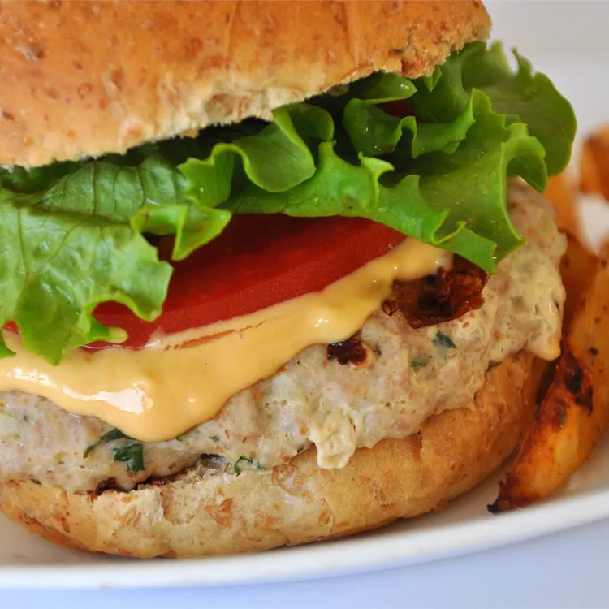

Burger

Description
This Burer sauce has a zippy flavor thatgoes well in sandwiches or as a fry dip.
It's a tangy sauce that can be made spicy or milder for kids.
Ingredients
- 1 cup mayonaise
- half cup ketchup
- half cup prepared yellow mustard
- 2 teaspoons dried minced onion
- half teaspoon dried minced garlic
- half teaspoon white vinegar
- hot sauce to taste
- seasoned pepper to taste
Directions
- Whisk together mayonaise, ketchup, mustard, onion and vinegar in a bowl.
Season with hot sauce and seasoned pepper.
- Cover and chill at least 1 hour before serving.
